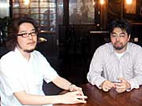

|
N.O.M レースゲームというと、ユーザーがある程度限定されているような印象を受けますが。 |
|
阪本 確かにそうですね。レースゲームっていうのは、ストイックなジャンルなので。
今村 でも、マリオカートみたいなものもありますよね。それに、今作は見た目はけっこう硬派ですが、実は間口がかなり広いゲームなんですよ。今まで「レースゲームはむずかしいし」と敬遠していた人も、自分なりのレベルに合わせて楽しめるんです。初心者も楽しく、上級者も楽しく、と。その辺は、任天堂とセガが長年培ってきたノウハウが生かされていると思います。そういう部分は暗黙の了解というか、老舗同士がやっているということで、すごくいいものができました。セガさんを見ていて、「さすがだな」と思う部分がたくさんあります。"ゲーム作り"というものに関しては、ほんとうに素晴らしいの一言に尽きますね。 |
| |
|
N.O.M 阪本さんのほうから見ると、どういった感じでしたか？ |
|
阪本 僕にとっては『F-ZERO』シリーズ自体が、教科書のようなゲームだったんですよね。
今村 いいこと言うなあ！ さすが！(笑)
阪本 『F-ZERO』はすみずみまで、それこそしゃぶり尽くすほど遊んだんです。なにがどうおもしろいのか、というのは100％理解していたつもりなんですよ。『F-ZERO X』が、とても奥の深いハマるゲームだったんですね。ぜんぜんレースゲームをやったことがない人でも、「触ってみようかな」と思うような。そこからさらにどうおもしろくするか、という部分が自分の腕の見せどころだったわけですが。 |
| |
|
N.O.M もともと設定しているターゲット層というのはあったんですか？ |
|
今村 それはもう、全年齢です(笑)。任天堂の立場から言わせてもらうと、ゲームセンターに置いてある『F-ZERO AX』で遊んでくれる人のなかには、まだゲームキューブを持っていない人も多いでしょうから、そこをガッツリ掴んでもらって。『F-ZERO GX』が出れば、ゲームセンターにあまり行かない子供さんたちもソフトを買ってくれるし。またその子供さんたちが連動要素を使いたくて、ゲームセンターに足を運んでくれる…みたいな感じで回ってくれると嬉しいですね。
阪本 アーケードがメインのユーザーと、ゲームキューブ版のユーザーが「おなじゲームをやってみて、どっちが速く走れるか」っていうのとかも、すごく興味ありますね。世の中にはいままでゲームセンターに行かなくて、コンシューマー(家庭用ゲーム)だけしかやっていないんだけど、ものすごく速い人たちもたくさん隠れているわけですよ。その人たちをアーケードに引っ張り出して、「こんなに速い人もいる！」っていうのがわかったりするといったことは、連動によって表面化してくるんじゃないかと思いますね。レースゲームとしては、そうなれたら本望じゃないかと。 |
| |
|
N.O.M 今後、目指していきたいものというのはどういった形なんでしょう。 |
|
阪本 僕はレースゲーム自体がすごく好きなんですよ。『デイトナUSA』なんかはすごくやり込んで、血マメができましたから(笑)。レースゲームとしては、もっと速さを競うというところを純粋にやっていきたいですよね。いまのレースゲームって、速さを競うというより、別のところに興味が行ってる気がするんですよ。
今村 最近のリアル指向のレースゲームを見ると、結構ターゲットを絞ってるんですよね。やっぱりクルマ好きの男性に絞ってる気がします。そういった側面から見ると、『F-ZERO』はクルマに興味のない人でも、小さい子供さんでもなんでも間口は広いんですよね。 |
| |
|
N.O.M 『F-ZERO』シリーズ自体は今度どう発展していく予定なんですか？ |
|
今村 任天堂としては『F-ZERO』というゲームが、セガさんとのコラボレーションで素晴らしいものができたので、さらに上を目指して「レースと言えば『F-ZERO』でしょう」と言われるようなふうになればと。ゲームではあるんですが、ゲームに留まらずに幅広い人に知れ渡って、愛され続けるシリーズに育てて行きたいですね。 |
| |
|
N.O.M 最後に、ユーザーへのメッセージをお願いします。 |
|
今村 連動をとにかく遊んでいただきたいですね。メモリーカードを持ってゲームセンターへ出かけていって、両方を遊んでくれると嬉しいですね。間違いなく遊びの幅が広がりますから。
阪本 任天堂×セガというコラボレーション自体も、歴史上初めての大事件ですし、アーケードで『F-ZERO』というタイトルが出るということも大事件なんですが…。個人的には連動を体験して、純粋にレースゲームというものを楽しんでもらいたいな、というのがいちばんですね。 |
| |
|
N.O.M きょうはどうもありがとうございました！ |